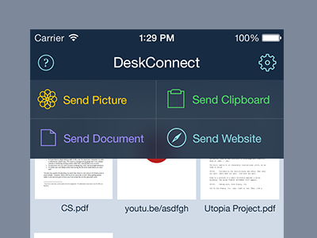

DeskConnect
Worked on the marketing materials and the design for the upcoming iOS 7 update of DeskConnect, an app that allows you to share files over the air between all your Apple devices.

iOS 5 Notification Center Redesign
Back in the good ol' days when skeuomorphism was the norm and "flat design" was just a term that meant "lazy," Apple got a lot of flak for releasing Notification Center with a ridiculously over-textured interface. This was my attempt at a redesign of it.

Tumblr Theme
I made a tumblr theme once.

Facebook Phone [Hypothetical]
There used to be a lot of rumors that Facebook was building a phone. I was bored one day and mocked up what I thought it could possibly look like.